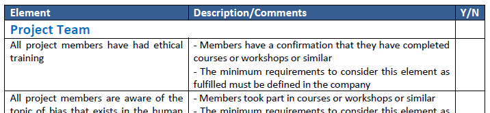
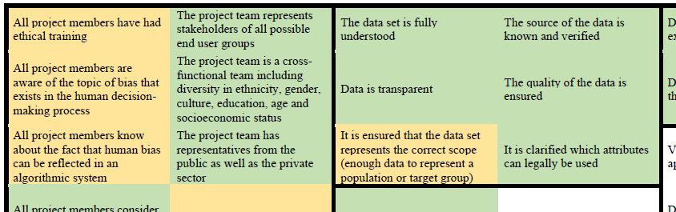

Bias Identification and Mitigation Framework / Additional Material
last update: Nov 22, 2021 by (Eduard Klein)
Starting in 2019, we developed an awareness-raising framework for bias identification and mitigation,
consisting of a meta model and a set of checklists.
The framework has been validated in the context of industrial AI projects.
This webpage offers additional material for the below mentioned publications.
Checklists:

OnePagers from Validation:

Related Publications:
-
[1] Thea Gasser, Eduard Klein, and Lasse Seppänen, “Bias – A Lurking Danger that Can Convert Algorithmic Systems into Discriminatory Entities,” in Centric2020 - The 13th Int. Conf. on Advances in Human-oriented and Personalized Mechanisms, Technologies, and Services, 2020, pp. 1–7.
https://www.thinkmind.org/index.php?view=article&articleid=centric_2020_1_10_30004
-
[2] Thea Gasser, Rémy Bohler, Eduard Klein, and Lasse Seppänen, “Validation of a Framework for Bias Identification and Mitigation in Algorithmic Systems,” International Journal On Advances in Software, vol. 14, no. 1 & 2, 2021.
http://www.iariajournals.org/software/
Institutions involved:
BUAS - Bern University of Applied Sciences, Dept. of Business (Bern, Switzerland)
HAMK - Häme University of Applied Sciences (Hämeenlinna, Finland)